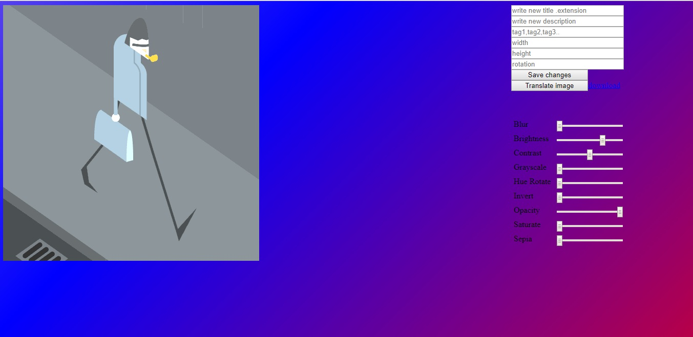

Tehnologii utilizate
HTML - HyperText Markup Language, HTML 5
HTML - este un limbaj de marcare utilizat pentru crearea paginilor web ce pot fi afișate într-un browser (sau navigator). Acesta combină textul cu informațiile suplimentare despre acel text. Informațiile suplimentare (de exemplu despre structura sau prezentarea textului) sunt exprimate utilizând așa numiți marcatori (tag-uri).
Specificațiile HTML sunt dictate de Consortiul Web (W3C).
HTML este o formă de marcare orientată către prezentarea documentelor text pe o singura pagină, utilizând un software de redare specializat, numit agent utilizator HTML, cel mai bun exemplu de astfel de software fiind browserul web. HTML furnizează mijloacele prin care conținutul unui document poate fi adnotat cu diverse tipuri de metadate și indicații de redare. Indicațiile de redare pot varia de la decorațiuni minore ale textului, cum ar fi specificarea faptului că un anumit cuvânt trebuie subliniat sau că o imagine trebuie introdusă, până la scripturi sofisticate, hărți de imagini și formulare. Metadatele pot include informații despre titlul și autorul documentului, informații structurale despre cum este împărțit documentul în diferite segmente, paragrafe, liste, titluri etc. și informații cruciale care permit ca documentul să poată fi legat de alte documente pentru a forma astfel hiperlink-uri.
HTML se poate genera si utilizând tehnologii de codare din partea serverului cum ar fi PHP, JSP sau ASP.
HTML5 este a cincea revizuire a standardului HTML și din octombrie 2011 este în curs de dezvoltare. Obiectivele sale principale au fost acelea de a îmbunătăți limbajul cu un suport pentru cele mai recente apariții multimedia în același timp menținândul ușor de citit de oameni și bine înteles de computere și device-uri (browsere web, parsere etc.). HTML5 își propune să însumeze nu numai HTML4.0, dar si XHTML 1.0 DOM2HTML (îndeosebi Javascript).
Urmărind predecesorii săi imediați HTML 4.01 și XHTML 1.1, HTML5 este un răspuns la observația că HTML și XHTML utilizate în comun pe World Wide Web sunt un amestec de caracteristici introduse de specificații diferite, împreuna cu acestea mai sunt și caracteristicile diferite aduse de software, de browsere, și multe erori de sintaxă în documnentele web existente. Astfle, HTML5 devine o încercare de a defini un singur limbaj de marcare (mark-up language) care poate fi scris în oricare dintre sintaxele HTML sau/și XHTML. Acesta include modele detaliate de prelucrare pentru a încuraja mai multe implementări interoperabile; extinde, îmbunătățește și raționalizează disponibilitățile pentru documentele web și introduce marcarea și aplicații API pentru aplicații web complexe. Din aceste motive, HTML5 este un posibil candidat pentru aplicațiile de platforme mobile. Multe caracteristici ale HTML5 au fost create din considerarea că va trebui să devină capabil să ruleze pe dispozitive cum ar fi smart-phonurile sau tabletele.
În special, HTML5 aduce multe noi caracteristici sintactice. In primul rand, la inceputul unui document HTML 5 nu mai este necesara decat declaratia , spre deosebire de celelate versiuni. De asemenea, noutatea vine si in cadrul elementelor ca 'video', 'audio', 'header' și canvas elemente HTML, precum și integrarea conținutului SVG care a înlocuiește utilizarea tag-ului generic object. Aceste noutăți sunt proiectate pentru a facilita includerea și manipularea în web a conținuturilor multimedia și grafice fără a fi nevoie să se recurgă la proprietățile de plugin și API. Alte noi elemente ca section, article, header, și nav sunt proiectate să îmbunătățească conținutul semantic al documentelor. Noi atribute au fost introduse în același scop, în același timp unele elemente și atribute au fost îndepărtate. Unele elemente ca 'a', 'cite' și 'menu' au fost schimbate, redefinite și standardizate. API-urile și DOM-urile sunt părți fundamentale în specificațiile HTML5. HTML5, de asemenea, definește in câteva detalii prelucrările necesare pentru documentele invalide, astfel încât sintaxa erorilor va fi tratată uniform de toate browserele cunoscute.
CSS - Cascading Style Sheets
CSS (foi de stiluri in cascada) este un standard pentru formatarea elementelor unui document HTML. Stilurile se pot atașa elementelor HTML prin intermediul unor fișiere externe sau în cadrul documentului, prin elementul style și/sau atributul style. CSS se poate utiliza și pentru formatarea elementelor HTML, XHTML si SVGL. CSS-ul are doua proprietati foarte importante: mostenirea si cascada. Mostenirea se refera la modul in care elementele din HTML mostenesc proprietatile elementelor-parinte si respectiv le transmit mai departe elementelor-copil. Cascada se refera la modul in care declaratiile CSS sunt aplicate documentelor si modul in care acestea se suprascriu, daca sunt in conflict. Atunci cand stilul unei reprezentari este realizat prin intermediul unor fisiere externe, sunt folositi selectorii CSS pentru aplicarea unui stil unei categorii de elemente.
SQL – Structured Query Language
SQL este în prezent, unul din cele mai puternice limbaje structurate pentru interogarea bazelor de date relaţionale, la origini fiind bazat pe algebra relationala. Acesta are ca scop inserarea datelor, interogații, actualizare și ștergere, modificarea și crearea schemelor, precum și controlul accesului la date. A devenit un standard în domeniu, fiind cel mai popular limbaj utilizat pentru creearea, modificarea, regăsirea și manipularea datelor de către SGBD-urile (Sistemele de Gestiune a Bazelor de Date) relaționale. Pentru că există o standardizare a limbajului SQL, multe SGBD (Oracle, Access, Sybase) recunosc principalele instrucţiuni ale acestuia.
Javascript
JavaScript (JS) este un limbaj de programare orientat obiect bazat pe conceptul prototipurilor.[5] Este folosit mai ales pentru introducerea unor funcționalități în paginile web, codul JavaScript din aceste pagini fiind rulat de către browser. Limbajul este binecunoscut pentru folosirea sa în construirea siturilor web, dar este folosit și pentru accesul la obiecte încapsulate (embedded objects) în alte aplicații. A fost dezvoltat inițial de către Brendan Eich de la Netscape Communications Corporation sub numele de Mocha, apoi LiveScript, și denumit în final JavaScript.
Php: Hypertext Preprocessor
PHP este un limbaj de programare.Folosit inițial pentru a produce pagini web dinamice, este folosit pe scară largă în dezvoltarea paginilor și aplicațiilor web. Se folosește în principal înglobat în codul HTML, dar începând de la versiunea 4.3.0 se poate folosi și în mod „linie de comandă” (CLI), permițând crearea de aplicații independente. Este unul din cele mai importante limbaje de programare web open-source și server-side, existând versiuni disponibile pentru majoritatea web serverelor și pentru toate sistemele de operare. Conform statisticilor este instalat pe 20 de milioane de site-uri web și pe 1 milion de servere web. Este disponibil sub Licenṭa PHP ṣi Free Software Foundation îl consideră a fi un software liber.
Bibliografie
Aplicatia are trei component principale: partea de client, serverul web si baza de date.
Clientul web prezinta continutul si interactiunea cu utilizatorul. Acesta este realizat pe baza unor tehnologii precum HTML(HyperText Markup Language), Php, CSS (Cascading Style Sheets).
Procesarea informatiilor se face la nivelul serverului cu ajutorul Php
Datete despre utilizatori si continutul dulapului fiecaruia sunt modelate, interogate și stocate conform unei paradigme relaționale ( gestionate pe baza limbajului declarativ SQL – Structured Query Language).
Autentificare/Inregistrare
Prima pagina a aplicatiei ofera utilizatorului posibilitatea sa se autentifice, daca are deja un cont, sau sa se inregistreze in caz contrar.
Incarcarea unei noi imagini
Pentru a incarca o imagine utilizatorul trebuie sa fie logat si sa se selecteze imaginea cu ajutorul butonului "Choose files" dupa care trebuie sa apese butonul "Insert".
Vizualizare imagini
Dupa ce utilizatorul a incarcat o imagine sau mai multe acestea o sa fie afisate direct spre vizualizarea sa,
iar pentru a vizualiza descrierea si a avea acces la butoanele unei imagini acesta trebuie sa stea cu cursorul pe imaginea care doreste.
Vizualizare imagini filtrate dupa un criteriu
Pe a vizualiza imagini filtrate dupa un criteriu, utilizatorul trebuie sa selecteze un filtru iar apoi sa apese butonul "Apply".
Delete/Download/Edit
Pentru a sterge, descarca, edita o imagine utilizatorul trebuie sa stea cu cursorul pe imaginea care doreste
pentru a avea acces la butoanele imaginii, iar in final sa apese butonul dorit.
Edit image
Pentru a edita o imagine utilizatorul trebuie sa stea cu cursorul pe imaginea care doreste
pentru a avea acces la butoanele imaginii, iar in final sa apese butonul "edit". Dupa este trimis catre pagina Edit va face editarea imaginii.
